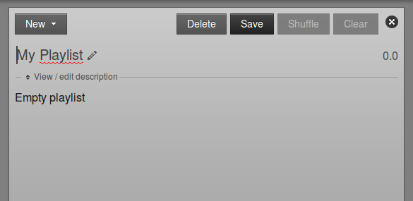

You can create a new playlist on the toolbar of the Playlists page.
At first, the new playlist will be shown as Untitled Playlist. Click the pencil icon on the right to give the playlist a name.
Type the name you have chosen, then press the Enter key on your keyboard to save the new name. You can edit the name of the playlist later, by clicking on the pencil icon again.

Click the link View / edit description to expand a box where you can enter a Description for the playlist, then click the Save button. Setting good quality metadata here will help you find the playlist using the search box later, so you should be as descriptive as possible.

With a playlist open, drag and drop items from the search results on the left into the playlist on the right. Jingles and voice tracks can be added before, after or between music items.

After adding files to the playlist, the total playlist time is displayed in the top right corner. The duration of an individual file is shown in each row of the playlist in a white font, and beneath this figure the time since the beginning of the playlist is displayed in a smaller light grey font. This elapsed time figure can be used as a time check for voice tracks, although this option may limit the re-usability of the voice track.
To audition a playlist file in your web browser, click the white triangle button on the left side of its row. (If the format of the file is not supported by your browser, the triangle in this button will be greyed out). If audition of the file format is supported, a pop-up window will open, with the playlist starting at the file you clicked.
Click the small white x icon on the right hand side of each row to remove a file from the playlist. You can also drag and drop files to re-order them, or click the Shuffle button to re-order files automatically.

To adjust start and end fades, click the playlist Fade button (two horizontal white arrows crossing in a grey rectangle), to the left of the Delete and Save buttons. This action opens a beige bar in which you can set the Fade in duration for the first item in this playlist, and the Fade out duration for the last item. This duration figure represents the length of the fade, in seconds and tenths of a second, not the time at which the fade takes place. The default fade duration is set in the Preferences page on the System menu.

When your playlist is complete, click the New button in the top left corner to create another playlist, click the close icon (a white cross in a black circle) in the top right corner, or browse to another page of the LibreTime interface.
If you want to edit the playlist content or metadata later, you can find it by Title, Creator, Last Modified date, Length, Owner or Year using one of the search tools on the Library page. Click the playlist in the search results list, and then click Edit from the pop-up menu. You can also Preview the entire playlist in a pop-up audition window, Duplicate or Delete one of your playlists from this menu.